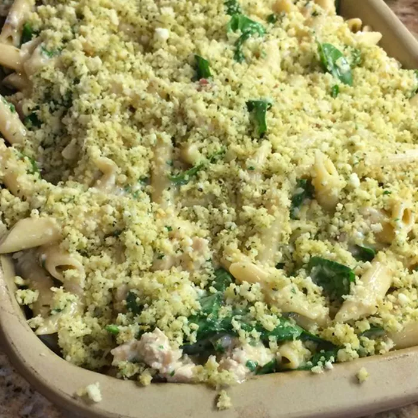

Creamy, flavorful and easy to make. This dish can certainly impress your family
or a large gathering. If you're a pasta lover like myself, you'll definitely love this recipe.
- 1/2 cup seasoned bread crumbs
- 1/2 cup grated Parmesan cheese
- 1 tablespoon olive oil
- 1 (16 oz.) box penne pasta
- 6 cups cubed cooked chicken
- 4 cups shredded Italian cheese blend
- 3 cups fresh baby spinach
- 1 (15 oz.) can crushed tomatoes
- 1 (15 oz.) jar Alfredo sauce
- 1 (15 oz.) jar pesto sauce
- 1 & 1/2 cups milk
-
Preheat an oven to 350 degrees F (175 degrees C). Grease a 9x13-inch baking dish.
Combine the bread crumbs, Parmesan cheese, and olive oil in a small bowl until evenly moistened;
set aside.
-
Fill a large pot with lightly salted water and bring to a rolling boil over high heat.
Once the water is boiling, stir in the penne, and return to a boil.
Cook the pasta uncovered, stirring occasionally, until the pasta has cooked through, but is still firm to the bite, about 11 minutes.
Drain well in a colander set in the sink.
-
Meanwhile, combine the chicken in a bowl with the Italian cheese blend, spinach, tomatoes, alfredo sauce, pesto sauce, and milk.
Stir in the pasta once done, and scoop into the prepared baking dish. Top with the bread crumb mixture.
-
Bake in the preheated oven until bubbly and golden brown on top, 40 to 45 minutes.